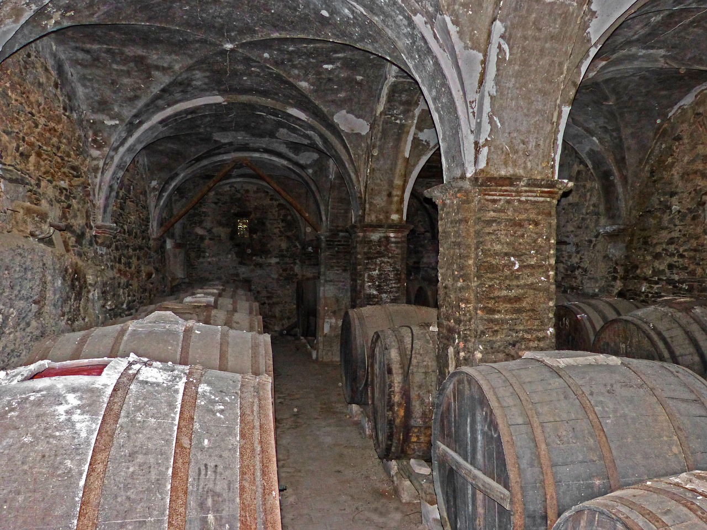
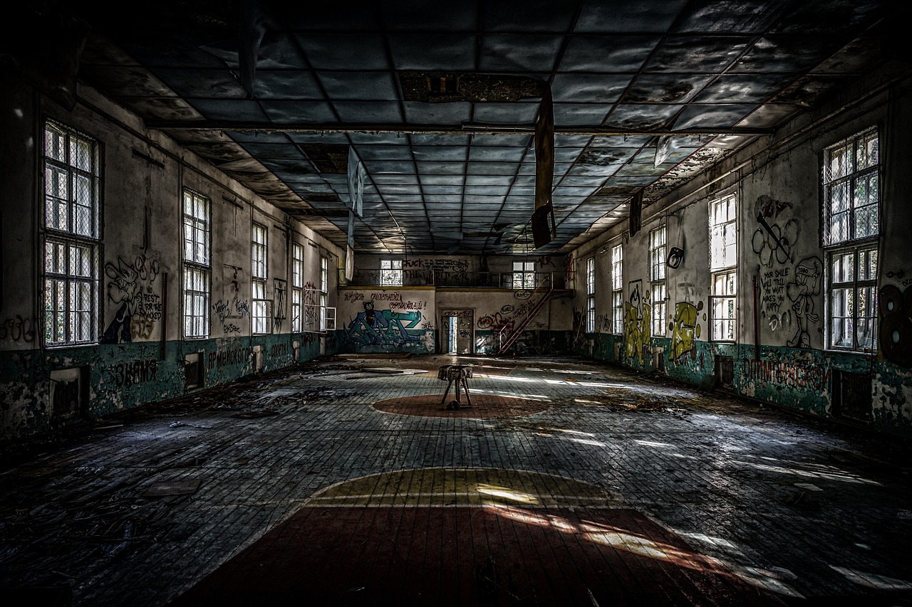
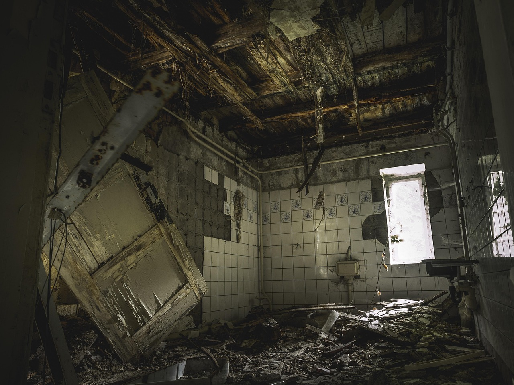
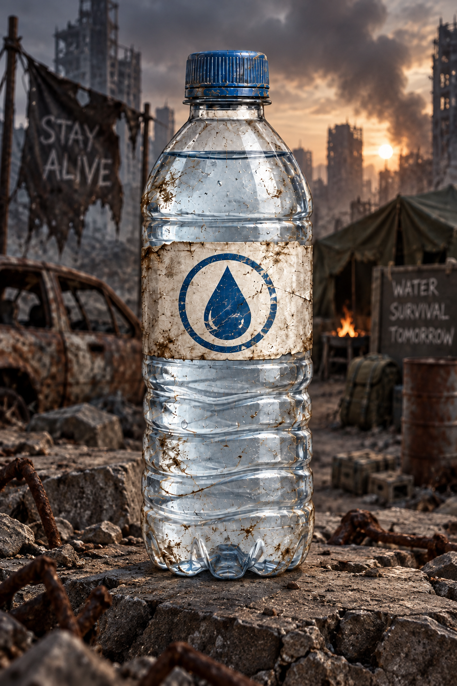
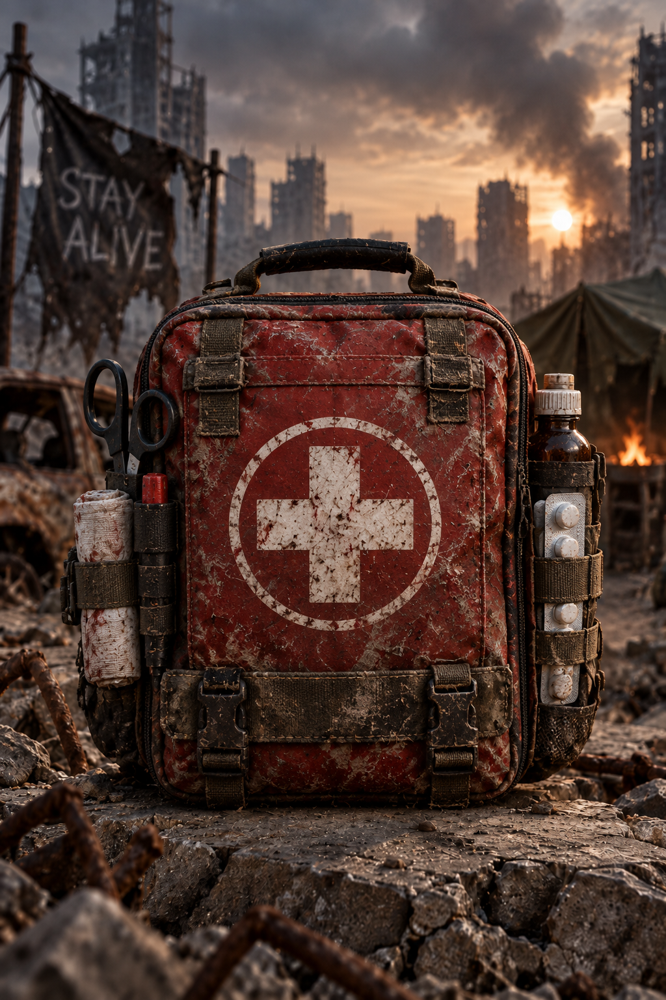
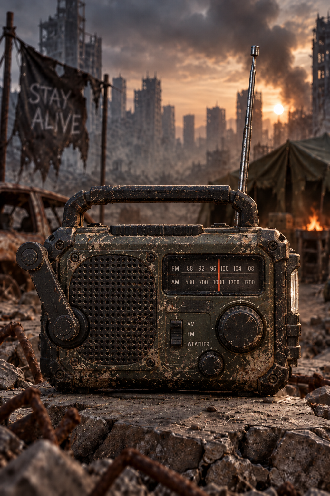
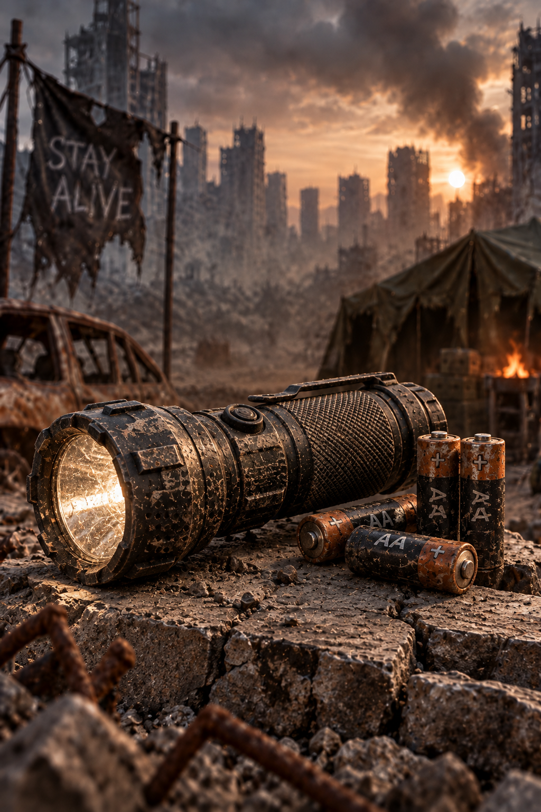
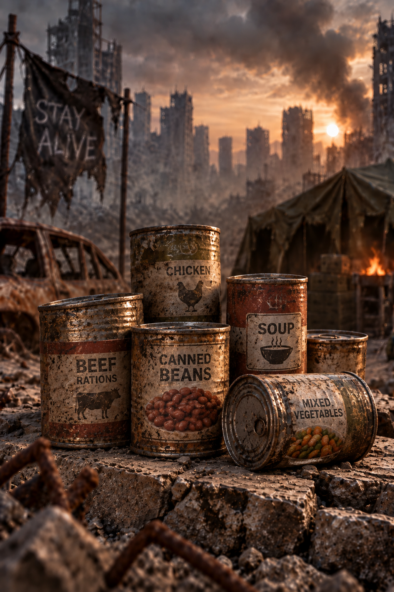
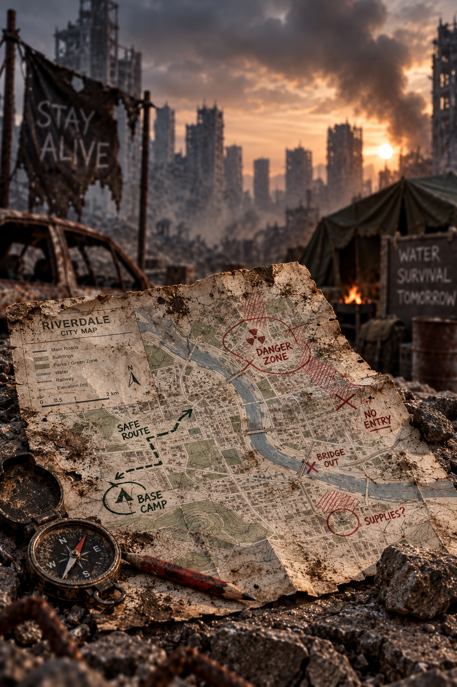

Bodega Norte
Estructura de concreto con un solo acceso. Cuenta con planta eléctrica y capacidad para 40 personas.
Riesgo bajoEl brote comenzó hace 47 días. Esta guía reúne la información verificada por los últimos puestos de control activos: dónde refugiarse, cómo medir el riesgo de cada zona y qué llevar en la mochila antes de salir.
Ver Zonas SegurasRefugios verificados por los últimos puestos de control. Las tres zonas originales permanecen como referencia. Los nuevos reportes aparecerán aquí automáticamente.

Estructura de concreto con un solo acceso. Cuenta con planta eléctrica y capacidad para 40 personas.
Riesgo bajo
Ubicada en la montaña. Transmite las coordenadas de los refugios cada seis horas. El ascenso es difícil.
Riesgo medio
Tiene medicamentos y quirófanos intactos, pero está en el centro de la ciudad. Solo entrar acompañado.
Riesgo altoTodavía no hay zonas nuevas reportadas.
Escala oficial de clasificación. Selecciona un nivel para conocer el protocolo que debes seguir.
Selecciona un nivel para ver el protocolo correspondiente.
Apaga toda fuente de luz, aléjate de las ventanas y espera diez minutos en silencio antes de moverte. La mayoría de los grupos sigue de largo si no detecta movimiento adentro.
Debe tener un solo acceso que puedas cerrar desde adentro, agua a menos de una hora de camino y una ruta de escape alterna. Si no puedes bloquear la entrada, no es un refugio.
Aísla a la persona en una habitación con cerrojo exterior y avisa al puesto de control más cercano. Lava la herida, pero no compartan utensilios, ropa ni vendas usadas.
Solo en nivel verde o amarillo, con luz de día, acompañado y dejando escrita la ruta y la hora estimada de regreso. Nunca salgas si el nivel es rojo.
Elementos indispensables antes de salir del refugio. Arma tu mochila y verifica cuántos llevas.
Elementos en la mochila: 0

3 litros por persona al día. Es el recurso que primero se agota y el más difícil de reemplazar.

Vendas, alcohol, analgésicos y antibióticos. Una herida pequeña sin atender es tan peligrosa como una mordida.

No depende de baterías. Es la única forma de recibir las transmisiones de Estación Radio Alta.

Nunca te desplaces de noche sin luz. Usa el haz corto para no revelar tu posición a distancia.

Enlatados y barras energéticas. Prioriza lo que no necesite cocción ni agua para prepararse.

Los teléfonos se descargan y no hay red. Marca en papel cada ruta que recorras y cada zona comprometida.
Todavía no has buscado.
Si encontraste un refugio o detectaste actividad hostil, envía el reporte al puesto de control más cercano. Las nuevas zonas quedarán guardadas en este navegador.